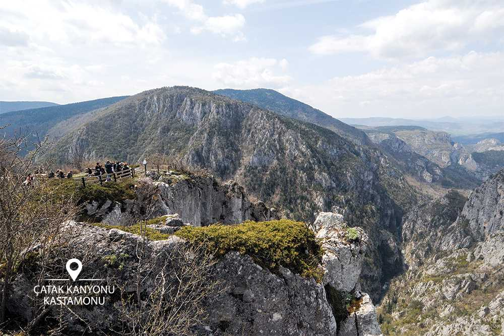

Ilgaz Dağı yöresinin arazi yapısı genellikle serpantinler, şistler ve volkanik kayaçlardan meydana gelmiştir. Sahada yer yapısı kadar dağ oluşum hareketleri yönünden de ilgi çekici örnekler bulunmaktadır. Türkiye’nin en uzun ve hareketli kırık hattı olan Kuzey Anadolu Fayı, Ilgaz Dağı'nın güney eteklerinden geçmektedir. Saha değişik karakterlerde vadiler, sırtlar ve doruklardan meydana gelmiştir. Ayrıca üst değerde peyzaj özellikleri sunan jeomorfolojik bir yapıya sahiptir. Ilgaz Dağının eteklerinden doruklarına doğru gelişen karaçam, kızılçam, köknar hakim ağaç türlerinden meydana gelen bitki örtüsü, zengin orman altı topluluğu ile desteklenmektedir. Ankara il merkezine en yakın kayak sporu merkezi milli park içindedir. Ayrıca sahada doğal yürüyüş çadırlarla ve karavanlarla kamp yapma imkanı ile günübirlik aktiviteler için uygun imkanlar mevcuttur. Milli park sınırları içindeki Baldıran Vadisi'nde Karasu Deresi üzerinde alabalık üretme istasyonları ve avlanma göletleri hizmete açıktır. 15 Haziran-15 Eylül tarihleri arasında ziyaretçiler bu sahada sportif olta balıkçılığı yapabilecekleri gibi yılın her günü isteklerine göre üretim istasyonlarından balık alma imkanına sahiptir. Milli park içinde olan Ilgaz Kış Sporları Turizm Merkezi'nde 800 metre uzunluğunda kayak pisti ile 1500 metre uzunluğunda iki adet telesiyej ve teleksi tesisi çalışmaktadır. Milli parka gelen ziyaretçilerin yeme-içme ve konaklama ihtiyaçlarını karşılamak üzere park içinde Kastamonu İl Sınırları kesiminde özel işletmede bir otel ve kamuya ait Köy Hizmetleri Bölge Müdürlüğü Tesisleri ile Ankara Üniversitesi Ilgaz Tesisleri bulunmaktadır. Batı Karadeniz Bölgesi'nde, Kastamonu ve Çankırı İlleri sınırları içinde bulunmaktadır.
Pınarbaşı Ilıca Köyü sınırları içerisinde bulunup, 12 km uzaklıktadır. Ilıca Köyünden itibaren patika yoldan yaya olarak 15 dakika ve Horma Kanyonu Platformu üzerinden 3 km yürüyüş ile Şelaleye gidilebilmektedir. Su, yaklaşık 10 metre yüksekten dökülmekte ve bu suyun döküldüğü yerde doğal olarak bir havuz oluşmuştur. Bu şelalenin en önemli özelliği de oluşan bu havuzun etrafının çok sayıda ağaç ve bitki örtüsü ile çevrili olmasıdır. Yine Şelalenin üst kısmından gidildiğinde yıllardır akan su ile kayaların aşınması sonucu kayalarda oluşan çukurluklar ve oymalar ayrı bir güzellik oluşturmaktadır.
Kale, Kastamonu’nun ana simgelerinden biri olarak kentin en yüksek noktasından şehrin tacı gibi durmaktadır. Şehrin batısında bir ana kaya kütlesi üzerinde bulunan kale, MS.12'nci yüzyılda Komnenoslar tarafından yaptırılmıştır. Orijinal yapıdan günümüzde sadece iç kale kısmı ulaşmıştır. Kalenin dış surları 18'inci yüzyıl sonlarında yok olmuştur. Kalenin çeşitli dönemler içerisinde geçirmiş olduğu değişiklikler, bir Orta Çağ Bizans yapısından çok Türk mimarisini yansıtmasına neden olmuştur. Kalenin şehirden yaklaşık 120 metre yüksekte oluşu; ulaşım yönünden oldukça kolay olması Kastamonu’yu panaromik açıdan izlenebilecek en iyi yer konumunda bulunmasını sağlar. Kale içerisinde sarnıçlar, zindan, kaçış tünelleri ile “Bayraklı Sultan” olarak anılan türbe bulunmaktadır.

Valla Kanyonu Devrekani Çayı'nın Küre Dağları içinde açmış olduğu enfes bir görüntüye sahiptir. Pınarbaşı'nın 26 kilometre kuzeyindeki Muratbaşı Köyü yakınlarında, Devrekani Çayı ile Kanlıçay'ın buluştuğu yerde başlar. Kuzeyde Cide'ye doğru yaklaşık 10 kilometre uzanan kanyon 800-1200 metre arasındaki yüksek kayalık uçurumlara sahiptir. Bu kayalıklarda kartal, şahin, akbaba gibi yırtıcı kuşlar bulunur. Kanyonun içi profesyonel gruplar tarafından ve uygun ekipman olmadan geçilemez. Ancak girişi ve çıkışında yerel rehberler ile kısa girişler yapılabilir.

Kastamonu’nun en önemli turizm değerlerinden olan Çatak Kanyonu, merkeze 7 kilometre uzaklıktadır. 6 kilometresi araç ile 1 kilometresi dağ içindeki yürüyüş parkurundan ilerlenerek kanyonun 900 metre yüksekliğe sahip gözetleme noktasına ulaşılmaktadır. Gözetleme noktasından kilometrelerce uzayan kanyonu seyretmek büyük bir keyiftir. Kanyon, Çatak Köprüsü’nün 1-2 km aşağısından başlamaktadır. Nalbantoğlu köyünde kesintiye uğrayıp, İnönü’ne kadar tekrar kesintisiz devam etmektedir.
